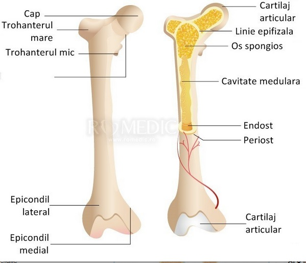
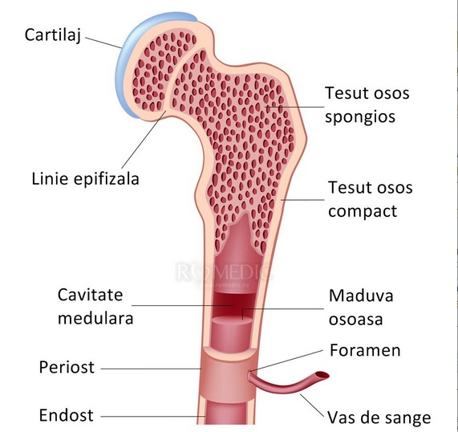
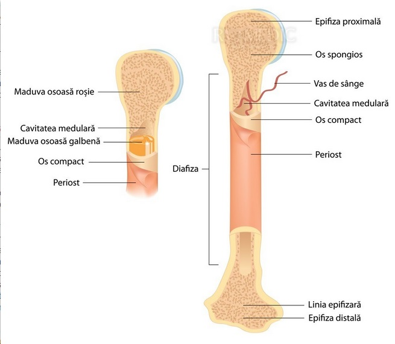
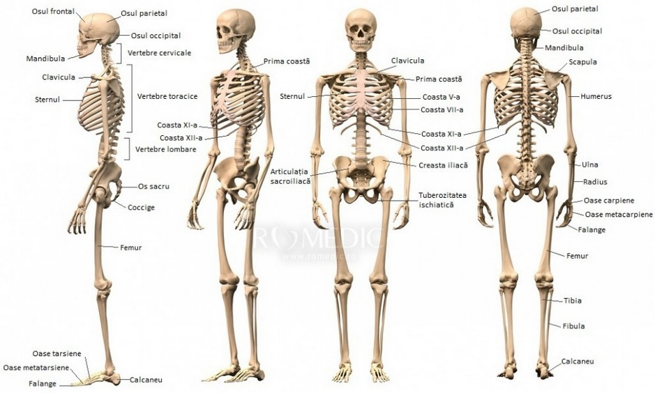

Sistemul osos
Sistemul osos (scheletul) este alcatuit din 206 oase, conectate intre ele prin articulatii, in majoritatea cazurilor.
Rolul principal al acestuia este de a suporta greutatea corpului, de a permite mobilitatea acestuia si de a proteja organele interne.
In general, sistemul osos este impartit in:
- scheletul cefalic
- scheletul axial (cavitate toracica, stern si coloana vertebrala)
- scheletul apendicular (membrele).
Tesutul osos
Oasele sunt alcatuite din tesut osos, acesta fiind alcatuit din matrice osoasa si osteocite, osteoblaste si osteoclaste (tipuri celulare). Tesutul osos este bogat vascularizat si are o activitate metabolica intensa. Sistemul osos este un rezervor de calciu fosfat si multi alti ioni.
Exista doua tipuri de tesut osos:
- tesut osos primar/ imatur: acest tip de tesut este inlocuit cu tesut osos matur, insa sunt anumite regiuni unde nu se produce schimbarea: in vecinatatea suturilor oaselor late ale craniului, la nivelul alveolelor dentare. Acesta este caracterizat de un numar scazut de elemente minerale si un numar crescut de osteocite.
- tesut osos secundar (matur): este caracteristic adultului. Acesta este bogat in fibre de colagen.
Tesutul osos se produce prin procesul numit osteogeneza. Aceasta se produce prin:
- osificare de membrana (endoconjunctiva): prin aceasta se formeaza majoritatea oaselor late
- osificare encondrala (endocartilaginoasa): prin acest tip de osificare se formeaza majoritatea oaselor lungi/scurte.
Cresterea osoasa este asociata cu resorbtia partiala a tesutului deja format, in acest fel facilitandu-se mentinerea morfologiei osului in timpul cresterii.
Remodelarea osoasa este mult ma intensa la copiii mici insa la adulti se desfasoara concomitent in multe regiuni ale scheletului, fiind independent de cresterea osoasa.
Componentele sistemului osos:
1. Craniul: este compus din opt oase (cutia craniana) si paisprezece (pentru fata).
2. Coloana vertebrala
- reprezinta scheletul axial al trunchiului, avand o localizare posterioara si mediana
- este formata din 33-34 de vertebre, dispuse metameric. Exista vertebre: cervicale (in numar de 7), toracice (12), lombare (5), sacrale (5), coccigiene (4-5).
3. Toracele
- este alcatuit din stern, coaste si vertebre toracice
a) sternul
- este localizat in partea anterioara si mediana a toracelui.
- este impartit in: manubriu sternal, corpul sternal, procesul xifoid.
b) coaste
- sunt in numar de 12 perechi, care fac legatura intre coloana vertebrala si stern.
- coastele sunt formate din os costal si cartilaj costal
- se diferentiaza coaste adevarate (se articuleaza cu sternul prin cartilaj propriu, sunt in numar de sapte) si coaste false (dintre care primele se articuleaza cu sternul prin intermediul altor coaste iar ultimelesunt flotante, nemaiajungand la stern.
4. Pelvis
- pelvisul osos (centura pelvina): forma acestuia este de trunchi de con cu diametrul transversal mai mare, ca o consecinta a ortostatismului. Rolurile pelvisului: sustinere si transmiterea greutatii trunchiului in statica si locomotia bipeda, protectia organelor pelvine, implicat in sarcina si nastere. Exista mai multe tipuri morfologice de pelvis:
a) tipuri pure
- tip ginecoid (este tipul clasic feminin, cu diamterul trasversal mai mare decat cel antero-posterior)
- tip android (tipul clasic masculin, intalnit insa si la femei)
- tip antropoid (turtit latero-lateral, cu diametrul antero-posterior mare si diametrul transversal mic, este intalnit mai adesea la femeile de rasa neagra)
- tip platipeloid (turtir in sens antero-posterior, diametru transversal foarte mare, intalnit mai des la femeile de culoare alba, insa este cel mai rar intalnit tip morfologic pelvin).
b) tipuri mixte
5. Oasele membrelor
- superioare: humerus, radius, ulna, oasele carpiene, oasele metacarpiene, falangele.
- inferioare: femur, rotula, tibie, fibula, oase tarsiene, oase metatarsiene, falange.
Structura externa a oaselor:
- diafiza (tesut osos compact)
- epifizele (lame dense de os compact care invelesc osul spongios care contine maduva rosie)
- metafizele
Structura interna:
- periost
- os compact
- os spongios
- cartilaj hialin
- maduva rosie
- maduva galbena
